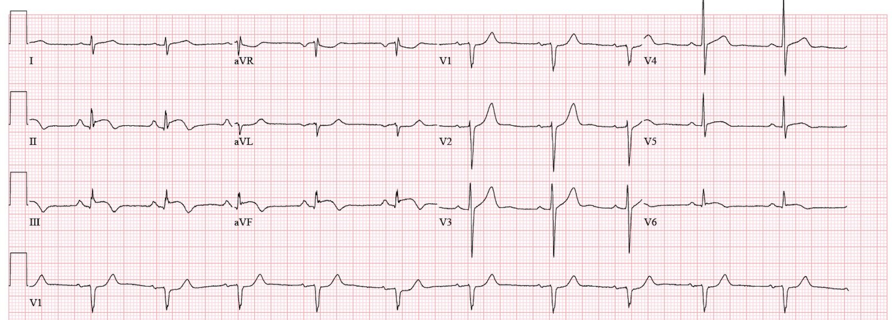
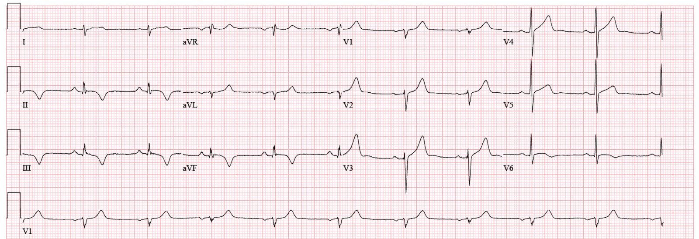
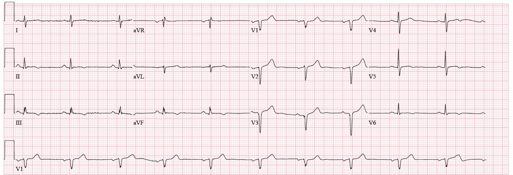
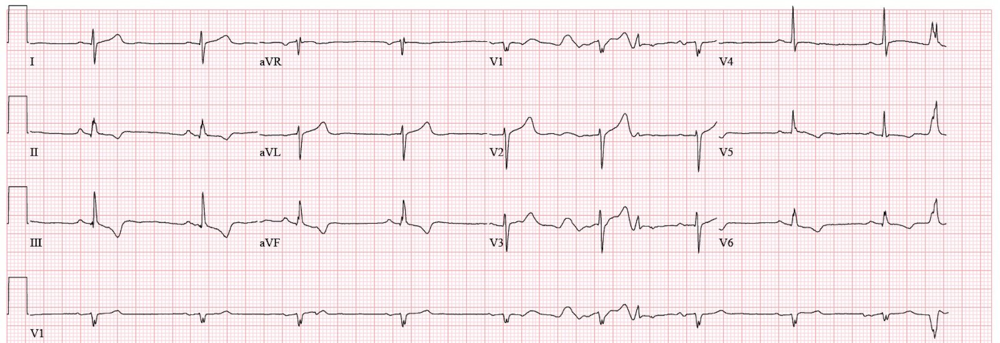
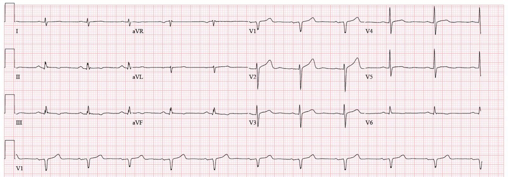
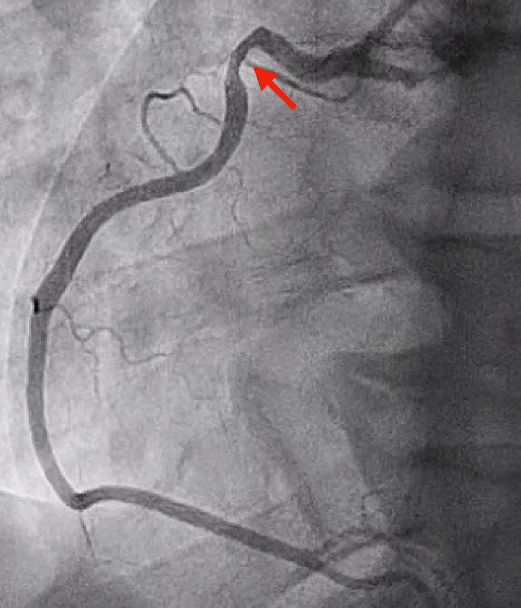
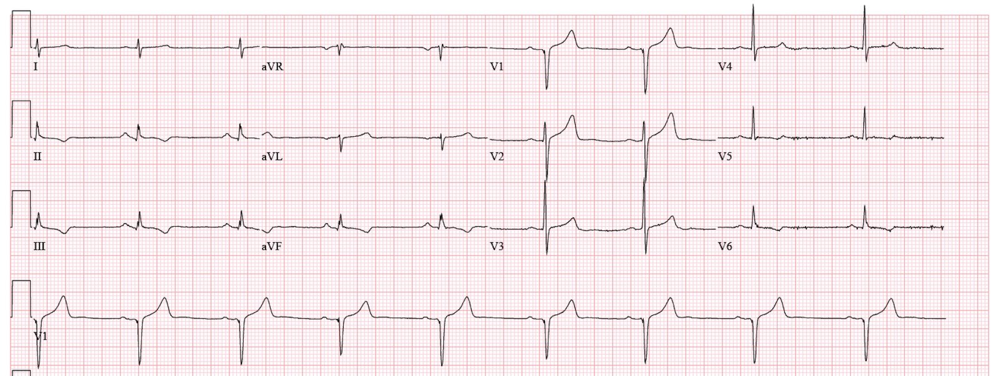

17/03/2024 — Vì sao kết quả chụp mạch vành lại bình thường?
Bản dịch tiếng Việt của bài "Why is the angiogram normal?" – Dr. Smith’s ECG Blog. Giữ nguyên toàn bộ 7 hình ảnh của bản gốc.
Tác giả: Willy Frick
Một người đàn ông ở độ tuổi 50, tiền sử hút thuốc lá 15 gói-năm, đến phòng khám của bác sĩ chăm sóc ban đầu vì đau đầu từng cơn. Ông cũng than đau ngực nhẹ từng cơn lan lên cả hai vai và ra sau lưng, kèm thỉnh thoảng vã mồ hôi không rõ nguyên nhân. (Mặc dù lan ra cánh tay trái là kiểu kinh điển nhất của thiếu máu cục bộ mạch vành, nhưng lan ra cả hai cánh tay thực ra lại có giá trị tiên đoán cao hơn một chút). Ghi chép của bác sĩ chăm sóc ban đầu cho thấy mức nghi ngờ thiếu máu cục bộ cơ tim thấp, nhưng “cho đầy đủ, kiểm tra troponin và điện tâm đồ.” Nếu có ghi điện tâm đồ tại phòng khám thì bản ghi đó đã không được lưu lại. Bệnh nhân được lấy máu sáng hôm đó, và troponin I là 6.496 ng/mL (tham chiếu < 0.033). Phòng khám của bác sĩ chăm sóc ban đầu (PCP) gọi điện cho bệnh nhân và khuyên ông đến ngay phòng cấp cứu. Điện tâm đồ của ông được trình bày dưới đây.
Điện tâm đồ 1


Độc giả của blog này sẽ không gặp khó khăn gì khi nhận ra đây là một OMI đã có phần tái tưới máu sớm. Xem xét chi tiết điện tâm đồ, chúng ta thấy:
- ST chênh lên (STE) và sóng T tối cấp (HATW) ở II, III, aVF kèm sóng T đảo ngược (TWI) tái tưới máu ở phần cuối
- ST chênh xuống (STD) ở aVL với sóng T dương quá mức, soi gương với tình trạng tái tưới máu thành dưới
- ST dẹt kèm chênh xuống kín đáo ở V1 và có lẽ cả V2, cùng với sóng T dương quá mức, gợi ý tắc thành sau đã tái tưới máu
- ST chênh lên dạng vòm (coving) kín đáo ở V6 kèm TWI ở phần cuối (và ở mức độ ít hơn tại V5), phù hợp với tắc thành bên đã tái tưới máu
Ông được chụp mạch vành cấp cứu, kết quả cho thấy các động mạch vành bình thường. Troponin của ông đạt đỉnh 10.310 ng/mL rồi giảm dần. (Smith: đỉnh troponin điển hình của một OMI là trên 10 ng/mL)
Điều gì đã xảy ra?
Trả lời: Đây là MINOCA — nhồi máu cơ tim với động mạch vành không tắc nghẽn (Myocardial Infarction with Non-Obstructive Coronary Arteries). Cái tên đã tự nói lên ý nghĩa. Nhưng MINOCA tự thân là một nhận xét nhiều hơn là một chẩn đoán. Câu hỏi tiếp theo ngay lập tức là: tại sao? Các nguyên nhân có thể (tùy theo định nghĩa bạn dùng) gồm: nứt vỡ mảng xơ vữa với tái thông tự phát, co thắt mạch vành, bóc tách động mạch vành tự phát, hoặc các nguyên nhân hiếm gặp khác. Phần lớn các nguồn loại trừ viêm cơ tim.
Khi nghi ngờ co thắt mạch vành, có thể đánh giá điều này trong phòng thông tim (cath lab) bằng acetylcholine tiêm trong mạch vành. Thử nghiệm ngẫu nhiên CorMicA đã cho thấy việc đánh giá mạch vành toàn diện (có kiểm tra co thắt mạch và rối loạn chức năng vi mạch) giúp cải thiện có ý nghĩa tình trạng đau thắt ngực, chất lượng cuộc sống và độ chính xác chẩn đoán. Đáng tiếc là điều này không được thực hiện ở hầu hết các phòng thông tim, và cũng không được làm ở ca này. Bệnh nhân được chụp MRI tim, cho thấy nhồi máu xuyên thành ở thành dưới-bên đúng như dự đoán.
Ông được điều trị nội khoa bằng aspirin, clopidogrel và atorvastatin. Ngoài ra, bác sĩ tim mạch của ông nghi ngờ đau thắt ngực do co thắt mạch nên đã cho thêm amlodipine. Ông không còn đau ngực nữa. Điện tâm đồ ghi lại khi tái khám tại phòng khám vài tuần sau được trình bày dưới đây. Tái tưới máu thành dưới và thành sau rõ ràng.
Điện tâm đồ 2


Sáu năm sau: Ông đến phòng cấp cứu vì các triệu chứng cũ tái phát. Ông mô tả đau ngực nhẹ sau xương ức, lại lan lên cả hai vai, thỉnh thoảng kèm vã mồ hôi. Ông nói cơn đau lúc có lúc không, đôi khi chỉ kéo dài vài giây. Tại phòng cấp cứu, các triệu chứng của ông đã hết. Ông đã ngưng tất cả các thuốc khoảng một năm trước đó. Điện tâm đồ được trình bày dưới đây.
Điện tâm đồ 3


Nếu xem riêng lẻ, điện tâm đồ này gợi ý một OMI dưới-sau-bên có thể đã tái tưới máu (TWI ở các chuyển đạo dưới và chuyển đạo trước tim bên, kèm ST dẹt và sóng T dương quá mức ở V1-3, soi gương với các chuyển đạo phía sau). Tuy nhiên, khi biết bệnh nhân này đã từng bị nhồi máu ở vùng chi phối này, thì không rõ các dấu hiệu này phản ánh điều gì. (Nói cách khác, đây có thể là điện tâm đồ nền của ông.) Troponin I ban đầu là 0.013 ng/mL (tham chiếu < 0.033), lặp lại 2 giờ sau là 0.016. Đến lúc này, phòng cấp cứu hội chẩn tim mạch, và bác sĩ tim mạch yêu cầu ghi lại điện tâm đồ. Bệnh nhân nói với bác sĩ tim mạch rằng các triệu chứng của ông không tái xuất hiện kể từ khi đến bệnh viện.
Điện tâm đồ 4


Trong bối cảnh đau ngực đã hết, điện tâm đồ này được diễn giải là xác nhận tái tưới máu thành dưới-bên, và bệnh nhân được cho liều nạp aspirin và clopidogrel, bắt đầu truyền heparin liên tục, với kế hoạch thông tim. Các giá trị cTnI liên tiếp là 0.019 ng/mL và 0.027 ng/mL, đang tăng nhưng vẫn nằm trong khoảng tham chiếu (< 0.033). Bệnh nhân báo cơn đau tái xuất hiện thoáng qua, và điện tâm đồ được ghi lại.
Điện tâm đồ 5


Giống như điện tâm đồ 3, điện tâm đồ này có thể bị nhầm là không đặc hiệu. Tuy nhiên, trong bối cảnh lâm sàng này và đặc biệt là sau điện tâm đồ 4, điện tâm đồ hiện tại thực ra phản ánh tình trạng tắc lại! Đây là một “ảnh chụp nhanh” sóng T trong giai đoạn chuyển tiếp từ sóng T tái tưới máu đảo ngược sâu sang sóng T dương, tối cấp. Nếu điện tâm đồ được ghi vài phút sau đó, khi sóng T dương hơn một chút, nó sẽ trông giả bình thường. Đến lúc này, bệnh nhân được đưa đi chụp mạch vành. Hình ảnh RCA được trình bày dưới đây.
Dưới đây là một khung hình tĩnh với mũi tên đỏ chỉ vào một vùng co thắt khu trú ở RCA đoạn gần


Chụp mạch vành lại sau khi dùng nitroglycerin trong mạch vành cho thấy co thắt đã hết:
Hệ động mạch vành trái bình thường trên phim chụp mạch. Bệnh nhân được dùng lại amlodipine. Các giá trị cTnI lặp lại vẫn trong giới hạn bình thường và giảm dần.
Phát hiện này trên chụp mạch vành giải thích cả lần nhập viện hiện tại lẫn lần trước. Ở lần nhập viện đầu tiên nhiều năm trước, ông bị nhồi máu cơ tim típ 2 thứ phát do co thắt mạch — điều đã được nghi ngờ nhưng chưa được xác nhận vào thời điểm đó, và tình trạng co thắt đã hết vào lúc tiến hành chụp mạch vành. Các triệu chứng của ông được kiểm soát bằng amlodipine trong nhiều năm, nhưng ông đã ngưng thuốc và các triệu chứng quay trở lại. Khi ra viện, ông được dùng lại amlodipine và được kê đơn varenicline để hỗ trợ cai thuốc lá. Một điện tâm đồ cuối cùng được ghi 24 giờ sau khi các triệu chứng đã hết.
Điện tâm đồ 6


Điện tâm đồ này xác nhận RCA được tái tưới máu bền vững. Một số bác sĩ khi xem điện tâm đồ này đã lầm tưởng rằng nó xấu đi so với điện tâm đồ 5 vì sóng T đảo ngược “nặng hơn.” Nhưng độc giả của blog này hiểu hiện tượng tái tưới máu, và nhận ra thay đổi này là bằng chứng đáng yên tâm về sự tái tưới máu đầy đủ.
Những điểm cần học:
- Co thắt mạch là một nguyên nhân của MINOCA. Tình trạng này có thể được kiểm tra, và CorMicA đã cho thấy việc kiểm tra như vậy cải thiện độ chính xác chẩn đoán và giảm đau thắt ngực.
- Thuốc chẹn kênh calci và cai thuốc lá cải thiện triệu chứng ở bệnh nhân đau thắt ngực do co thắt mạch.
- Kết quả thông tim “bình thường” không loại trừ OMI — vốn là một chẩn đoán lâm sàng.
- Đau thắt ngực do co thắt mạch thường nặng nhất vào buổi sáng và ban đêm. Khác với cơn đau thắt ngực kinh điển, nó không phải lúc nào cũng biểu hiện là cơn đau nặng lên khi gắng sức và đỡ khi nghỉ ngơi (vì co thắt mạch có thể xảy ra và tự hết, không phụ thuộc vào hoạt động thể lực hay nhu cầu oxy).